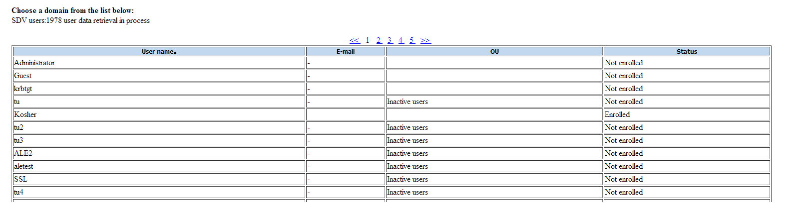
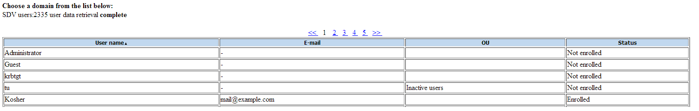
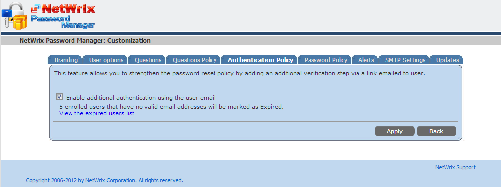
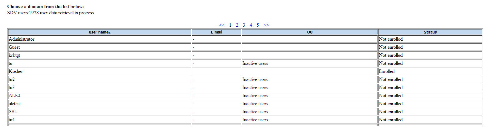
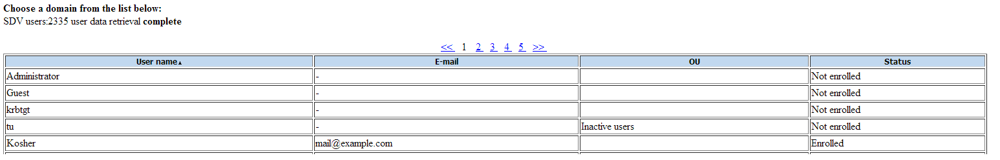
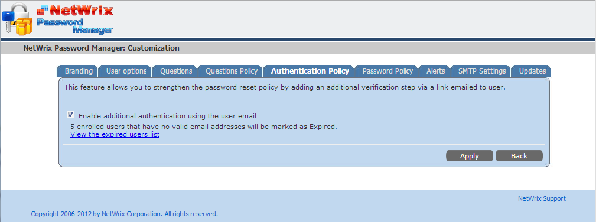

When we run the Enrollment report, the Email Address column fields are blank for all user
accounts. What should this column show and what can we do to make this work?

The Email Address column returns the email address used for Additional authentication using the user email feature.
An email with a unique link to the password reset page is sent to this address after the user answers secret questions. The user then should follow the link to complete password reset.
The Email Address field contains data for the enrolled users only, because this email is specified during the enrollment procedure if the Authentication policy feature is enabled.

To enable this feature, select Additional authentication using the user email check box on the Administrative portal - Settings - Authentication Policy tab.


The Email Address column returns the email address used for Additional authentication using the user email feature.
An email with a unique link to the password reset page is sent to this address after the user answers secret questions. The user then should follow the link to complete password reset.
The Email Address field contains data for the enrolled users only, because this email is specified during the enrollment procedure if the Authentication policy feature is enabled.

To enable this feature, select Additional authentication using the user email check box on the Administrative portal - Settings - Authentication Policy tab.
